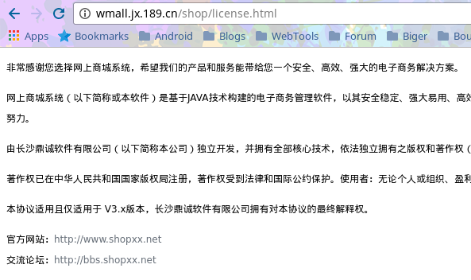

五太子不能退休，快当我的备用机！
起因
我的Nexus 5用了两年，电池也是越来越尿崩，从一天一充到一天三充。出门在外，接上充电宝使用，越充越少。结果没电关机，自己失联了好几次，耽误了很多事情。

于是入手了Nubia Z11，2.5D玻璃屏幕，看起来几乎没有边框，外观漂亮，性能也不错，续航还行，快充，适合日常使用。


Nexus 5闲置之后，待机居然能超过一个星期，终于找到电池尿崩的原因了，装的东西太多。 以前的手机同时跑telegram，GAPPS，QQ，微信，支付宝，美团，闲鱼等耗电大户，还运行着XP框架，Shadowsocks，不尿崩才怪呢。 于是这一次打算分开使用，Nexus 5作为工作机，Nubia Z11作为生活机。
另外用和我名字一样的人的信息在网上办了一张手机卡，却发现现在要实名了，手持身份证不说，还要身份证和电话卡包装合照。 这个难度就大了，看了一下实名验证的网站，使用的是二次开发的xxshop，前台作为商城，可以购买电话卡，后台有审核实名用户的功能。

用户上传的照片会用随机字符串重命名，并且知道图片上传的目录，想获取那些用户的照片可行的，可以穷举，难度比较大。 还有一个办法就是找漏洞，但是这个平台经过高度定制，并没有那么简单找到，而且花时间在这个地方也没多大意义，就没有继续。折腾
从零开始
开始折腾我的备用机，首先刷回官方的固件。谷歌原厂镜像 然后进fastboot刷入TWRP的recovery，再进入REC刷SuperSU。
装装装
进入系统后，安装自己的梯子，还有最重要的酷市场 必备
因为我的电源键失灵，经常是按住的状态，导致关机或者不停重启，可以看到插卡处也裂了（很多人的手机这里都裂了），我只好把它拆了。

在GravityBox里把音量键换成电源键，双击虚拟home健熄屏，设置听歌时不能调音量，这样听歌时也能唤醒手机了。
Nethunter自带的就不说了，这里推荐几个不错的应用
- zANTI，中间人攻击
- IP Cam Viewer，监控某些人
- Packet Capture，免Root抓包
- HiPER Calc Pro，功能强大的计算器
- Larix Broadcaster，推流直播软件
- DroidEdit，安卓上的Sublime,比Jota+好用
- VNC Viewer
- Microsoft Remote Desktop，两款远程桌面应用
我是Archlinux用户，使用KDE，于是我安装了KDE Connect桌面端和移动端，作为手机与电脑的无线连接工具。


最后刷入Kali Nethunter。 去年写过一篇笔记，Kali Nethunter尝鲜但是不适用于现在了。
postgresql无法启动
我安装完Nethunter，发现postgresql服务不能启动
1
2root@kali:~# service postgresql start
[....] Starting PostgreSQL 9.4 database server: main[....] The PostgreSQL server failed to start. Please check the log output: 2016-10-08 12:18:03 UTC [5618-1] FATAL: could not create shared memory segment: Function not implemented 2016-10-08 12:18:03 UTC [561[FAILDETAIL: Failed system call was shmget(key=5432001, size=40, 03600). ... failed!
使用shmget函数出错，发现是共享内存这里有问题。初步判断可能是设置的值过小。
1
2root@kali:~# cat /proc/sys/kernel/shmmax
cat: /proc/sys/kernel/shmmax: No such file or directory
查看一下内核中发现并不存在这个属性，这就尴尬了，于是不断Google，终于在Offensive Security 的 Github Issues上面看到了同样的情况。他们已经Patch了，但是官网上面的还是没变，需要自行打包。
那么我就开始打包吧，其实不是Nexus5也能刷入Nethunter 参照官方Wiki，一步一步操作 下载Nethunter源文件，进入目录。
1
2git clone https://github.com/offensive-security/kali-nethunter
cd kali-nethunter/nethunter-installer
这里只能用Python2构建包，查看说明后，运行如下命令，参数大概是Nexus5的代号hammerhead，目标系统marshmallow，仅打包Kernel。 因为我已经装过一遍了，所以这次只打包内核，再加一个自定义版本就叫RBQ吧！
1
2
3
4
5
6
7
8
9
10
11
12
13
14
15
16
17
18
19
20
21
22
23
24
25
26
27
28
29
30
31
32
33
34
35
36
37
38
39
40
41
42
43
44
45
46
47
48
49
50
51
52gorgias@3vil ~/g/k/nethunter-installer> python2 build.py -d hammerhead -m -k -r RBQ
Kernel: Copying common files...
Kernel: Copying armhf arch specific common files...
Kernel: Copying boot-patcher files...
Kernel: Copying armhf arch specific boot-patcher files...
Kernel: Configuring installer script for hammerhead
Kernel: Configuring boot-patcher script for hammerhead
Found kernel image at: devices/marshmallow/hammerhead/zImage-dtb
Creating ZIP file: kernel-nethunter-hammerhead-marshmallow-RBQ.zip
Added: zImage-dtb
Added: boot-patcher.sh
Added: env.sh
Added: patch.d-env
Added: META-INF/com/google/android/update-binary
Added: META-INF/com/google/android/updater-script
Added: ramdisk-patch/init.nethunter.rc
Added: ramdisk-patch/sbin/dvmediarevert
Added: ramdisk-patch/sbin/media_profiles.xml
Added: ramdisk-patch/sbin/dvbootscript.sh
Added: ramdisk-patch/sbin/hostapd
Added: tools/busybox
Added: tools/unpackbootimg
Added: tools/freespace.sh
Added: tools/installbusybox.sh
Added: tools/mkbootimg
Added: tools/lz4
Added: patch.d/01-ramdisk-patch
Added: patch.d/02-no-verity-opt-encrypt
Added: system/xbin/hid-keyboard
Added: system/etc/firmware/htc_9271.fw
Added: system/etc/firmware/ar9170-1.fw
Added: system/etc/firmware/ar9170-2.fw
Added: system/etc/firmware/rt2870.bin
Added: system/etc/firmware/rt3070.bin
Added: system/etc/firmware/rt73.bin
Added: system/etc/firmware/rt2561.bin
Added: system/etc/firmware/rt2860.bin
Added: system/etc/firmware/htc_7010.fw
Added: system/etc/firmware/carl9170-1.fw
Added: system/etc/firmware/zd1211/zd1211_ub
Added: system/etc/firmware/zd1211/zd1211b_uph
Added: system/etc/firmware/zd1211/zd1211_ur
Added: system/etc/firmware/zd1211/zd1211b_uphm
Added: system/etc/firmware/zd1211/zd1211b_ur
Added: system/etc/firmware/zd1211/zd1211_uph
Added: system/etc/firmware/zd1211/zd1211_uphr
Added: system/etc/firmware/zd1211/zd1211_uphm
Added: system/etc/firmware/zd1211/zd1211b_uphr
Added: system/etc/firmware/zd1211/zd1211b_ub
Added: system/etc/firmware/rtlwifi/rtl8192cufw.bin
Added: system/etc/firmware/rtlwifi/rtl8188efw.bin
Created kernel installer: kernel-nethunter-hammerhead-marshmallow-RBQ.zip
打包完成后会在目录下生成文件，通过KDE Connect传入到手机，重启进入REC刷入。大功告成！！

最新的Nethunter使用的是kali-rolling源，如果更新源或者下载包失败的话，请把源更改为
1
2deb http://http.kali.org/kali kali-rolling main contrib non-free
deb-src http://http.kali.org/kali kali-rolling main contrib non-free